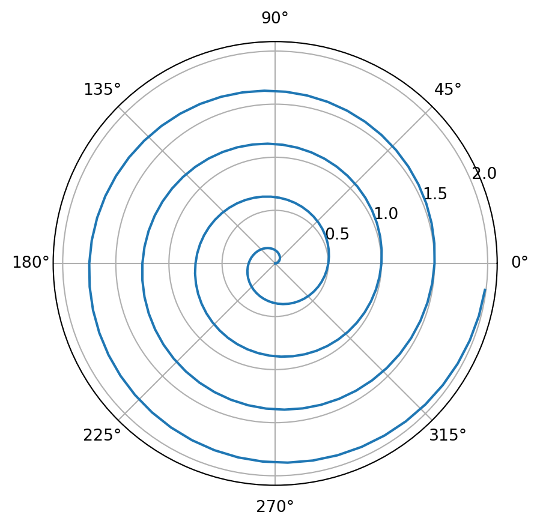

import numpy as np
import matplotlib.pyplot as plt
r = np.arange(0, 2, 0.01)
theta = 4 * np.pi * r
fig, ax = plt.subplots(
subplot_kw = {'projection': 'polar'}
)
ax.plot(theta, r)
ax.set_rticks([0.5, 1, 1.5, 2])
ax.grid(True)
plt.show()
Hirofumi Shiba
November 4, 2023
筆者はQuartoを，「TeXにような使用感で数式・コードが併存する文章を書き，RStudioのような使用感でコードの実行やプレゼンができる，等号開発環境」と理解した． 前述のTeX, RStudioに慣れている人にとっては極めて低い限界コストで莫大な利益を得るだろう．
Note: The followings were pasted from the official documentation.1
For a demonstration of a line plot on a polar axis, see Figure 1.
QuartoではこのようなNotebook-likeなドキュメントが，極めて簡単に＋凡ゆるフォーマットで作成できる． 特にVSCodeの拡張機能と組み合わせれば，RStudioのような隙のない統合開発環境が得られる．またVSCodeではビジュアルモードでの編集もサポートされており，Jupyter Notebookと全く同じ使用感で始められる．
基本的な仕組みとして，自分で作成するのは .qmdファイルのみである．その後はquarto renderコマンドにより，コードブロックはJupyterによって処理され，全体はmarkdownに変換され，Pandocによってpdf, html, word など好きな形式に最終出力できる．
拡張機能をオンにしたVSCodeではRun Cellボタンもあるので，ノートブック全体を毎度ビルドせずとも，コードブロックごとに実行して結果を見ることもできる．Ctrl+Enterで１行ごとに実行できる操作感はRStudioと同じである．
各ファイルの冒頭にYAML blockを用意することで，ノートブックの詳細を調整できる（参照：HTML Options）．
---
title: "Quarto Basics"
format:
html:
code-fold: true
jupyter: python3
---本文はmarkdown記法で書く．数式も使える： \[\mathrm{P}[|\xi|<t]\le2e^{-\frac{t^2}{2\sigma^2}},\qquad t>0.\]
また，コードブロックにもコメントアウトと接頭辞の組み合わせ#|を前につけることでYAMLで指示が出せる（参照：指示のリスト）．上のコードブロックには
#| label: fig-polar
#| fig-cap: "A line plot on a polar axis"と追加されているために，出力された図にラベリングとキャプションが付いているのである．
project typeをwebsiteとしたリポジトリでquarto renderをしても，不要なファイルが自動で削除される．このような点がライトユーザーでもとにかく使いやすい．公式Guideを参考．
mainと別けるまずgh-pagesという全く新しいブランチを作成する．既存のリポジトリのコミット履歴とは独立している新しいブランチを作るときは--orphanオプションが利用される．
Terminal
基本gh-pagesブランチには自分では立ち入らない．
Publishコマンドによるサイトの公開mainブランチにいることを確認して，
を実行．
GitHubの方の設定Settings: Pagesで，Sourceをgh-pagesブランチの/(root)にしていることを確認すれば，これで無事サイトが公開されていることが確認できる．
さらに，ローカル上でrenderするのではなく，コミットする度にGitHub上でレンダリングしてもらえるように自動化することもできる．こうするとスマホからも自分のサイトが更新できる．
This is footnote. What a great feature!↩︎